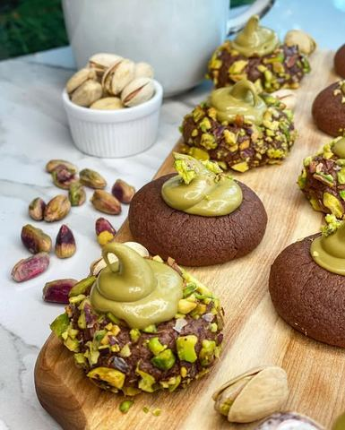

Čoko pistać fantazija

Moja beleška
SačuvanoSastojci
- Sastojci
Priprema
1. Rernu zagrejte na 170C 2. Izmiksati zajedno šećer sa puterom, pa posle nekih 2 minuta dodati žumance i aromu vanile. Mutiti dok ne dobijete lepu kremkastu smesu. 3. Potom u to dodati izmešane suve sastojke - brašno, kakao i so, pa ih lagano umutite toliko da se povežu. U ovoj fazi sam ja dodala jednu kašiku mleka kako bih lakše i lepše oblikovala kuglice. 4. Od ove smese ja sam pravila kuglice od po 20 gr i dobila sam tačno 23 kolačica. Polovinu loptica sam uvaljala u belance pa u seckani pistać, polovinu sam samo ostavila bez toga. Svaku sam udubila po sredini. 5. Peku se tačno 10 minuta, a prohladjene se filuju kremom od pistaća. Trenutno ga imate u Lidlu u okviru Deluxe ponude, kako ovaj od pistaća tako i krem od lešnika, ne znam da li ste isprobali, ali vrede ☺️🥰 Kolačići su sutradan još ukusniji, a ako zelite da vam potraju koji dan više možete ih čuvati i u poklopljenoj činiji u frižideru, pa ih izvaditi nekoliko minuta pre nego što ćete se sladiti 🥰
Originalni opis sa Instagrama
Čoko pistać fantazija Jako sam srećna što se konačno na našem tržištu pored nutele na koju smo svi navikli mogu pronaći i kremovi od lešnika ili pistaća. Zaista su nova dimenzija ukusa i pomeraju nas da osmislimo i neke nove kolačiće, keksiće i tortice i unesemo neku novu magiju u svet slatkiša. 💫 Ja od kada sam zavolela pistać sladoled iz @c_ovca želim da taj ukus pod nepcima osećam i u slatkišima koji izlaze iz moje kuhinje. Danas vam predstavljam ove ljupke kolačiće 🥰 Sastojci: •125 gr putera sobne temperature •120 gr kristal šećera •1 žumance + 1 belance •kašičica arome vanile •160 gr mekog brašna tip 400 •30 gr kakaa •1/2 kašičice morske soli •1 kašika mleka •50 gr sitnije seckanih nesoljenih pistaća @curcuma_vracar •krem od pistaća 1. Rernu zagrejte na 170C 2. Izmiksati zajedno šećer sa puterom, pa posle nekih 2 minuta dodati žumance i aromu vanile. Mutiti dok ne dobijete lepu kremkastu smesu. 3. Potom u to dodati izmešane suve sastojke - brašno, kakao i so, pa ih lagano umutite toliko da se povežu. U ovoj fazi sam ja dodala jednu kašiku mleka kako bih lakše i lepše oblikovala kuglice. 4. Od ove smese ja sam pravila kuglice od po 20 gr i dobila sam tačno 23 kolačica. Polovinu loptica sam uvaljala u belance pa u seckani pistać, polovinu sam samo ostavila bez toga. Svaku sam udubila po sredini. 5. Peku se tačno 10 minuta, a prohladjene se filuju kremom od pistaća. Trenutno ga imate u Lidlu u okviru Deluxe ponude, kako ovaj od pistaća tako i krem od lešnika, ne znam da li ste isprobali, ali vrede ☺️🥰 Kolačići su sutradan još ukusniji, a ako zelite da vam potraju koji dan više možete ih čuvati i u poklopljenoj činiji u frižideru, pa ih izvaditi nekoliko minuta pre nego što ćete se sladiti 🥰 Prijatno ❣️ #pistachio #cokopistacija #slatkisi #idejezadezert #dezert #domacikolaci #pistacchiotti #receptizakolace #slatkikolacici #zadovoljnahr #cokokolacici